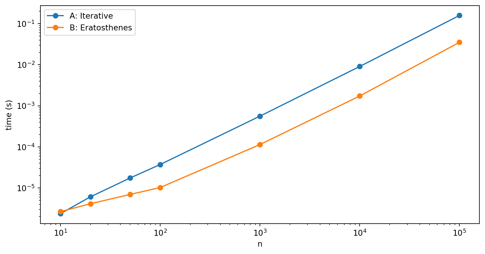
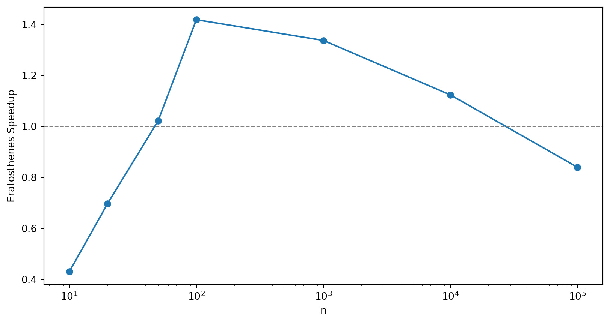

def primes_next(primes):
"""Take an ordered list of prime numbers and append the next
prime.
Args:
primes: list of ordered primes, with the last prime odd,
e.g. [2,3].
Returns:
The list primes with the next prime appended,
e.g. [2,3,5].
"""
i = primes[-1]
while True:
i += 2
for p in primes:
if p**2 > i: # No factors found, i prime
primes.append(i)
return primes
if i%p == 0: # Factor found, try next i
breakSieving for Primes
2017-08-03
A common task in number theory problems is to find all the primes up to a number n. Project Euler is a great resource for problems like this. A simple method of finding primes, the Sieve of Eratosthenes, was known in Ancient Greece. You start with 2 and discard as non-prime all multiples of 2 up to n. You then move onto the next number you haven’t discarded, 3, and mark as non-prime all multiples of 3 up to n. We’ve discarded 4, so we move on to 5 and continue. We can stop when we get to \sqrt n as we’ll have discarded all the multiples by then.
Here’s what the algorithm looks like for n = 400.
When should we use the Sieve? In this notebook I’ll compare it to a naive iterative search by writing example algorithms in Python.
Solution A: Iterative Search
Our first approach is to iteratively build a list of primes up to a limit n.
When checking a number i for primality, we only need to check prime factors, so we can check the list as we’re building it. Also, in checking if a number i is prime, we only need to check for factors up to \sqrt{i}.
We’ll write a method that appends the next prime to an existing list of primes.
So for example, if we have the list [2, 3, 5] we expect to return [2, 3, 5, 7].
print(primes_next([2, 3, 5]))[2, 3, 5, 7]Now we repeat this until we get to n.
def primes_iterative(n):
""" Build a list of the primes up to n iteratively. """
p = [2,3]
while p[-1] <= n:
primes_next(p)
p.pop() # Discard the last one.
return pprint(primes_iterative(n=20))[2, 3, 5, 7, 11, 13, 17, 19]We’ll compare the methods later by counting the number of primes up to n each returns.
def sol_a(n):
""" Count the number of primes up to n iteratively."""
return len(primes_iterative(n))print("The number of primes up to 1000 is {0}.".format(sol_a(n=1000)))The number of primes up to 1000 is 168.Solution B: Sieve of Eratosthenes
For the Sieve of Eratosthenes algorithm, we’ll use some helper functions. First we want a method to sieve out the multiples of a factor f.
def sieve_multiples(A, f):
"""
Set the primality of multiples of f to False.
Args:
A: List of booleans representing primality of each index.
f: Factor to find multiples of.
Notes:
- A is indexed such that A[0] represents 1, A[1] represents 2, etc.
- Only sieves factors greater than f^2.
"""
for i in range(f**2-1, len(A), f):
A[i] = FalseNote that we only need to sieve for factors greater than f^2, as the smaller multiples will already have been discarded.
A = [True]*10
print(A)
sieve_multiples(A, 2)
sieve_multiples(A, 3)
sieve_multiples(A, 5)
print(A)[True, True, True, True, True, True, True, True, True, True]
[True, True, True, False, True, False, True, False, False, False]Next a couple of simple helper methods. One to get us the next True value in a boolean list.
def next_factor(A, start=0):
"""Returns the next True index in A, after start."""
return next((i for i, a in enumerate(A[start:], start=start) if a), None)Another to return all the indexes of all remaining True values, shifted by 1. Once we’ve performed the sieve, this will represent the reminaing primes.
def remaining(A):
"""Returns the indexes of all remaining True values, shifted by 1."""
return [i+1 for i, a in enumerate(A) if a]Now we’re ready to perform the sieve.
def primes_eratosthenes(n):
""" Build a list of the primes below n by the Sieve of Eratosthenes. """
A = [True]*n
A[0] = False # 1 is not prime
primes = []
p = 1 # 2 is prime
while p**2 < n: # Only need to check up to sqrt(n)
A[p] = False
primes.append(p+1)
sieve_multiples(A, p+1)
p = next_factor(A, p)
primes.extend(remaining(A)) # All remaining must be prime.
return primesprint(primes_eratosthenes(n=20))[2, 3, 5, 7, 11, 13, 17, 19]Again we’ll write a count method to compare.
def sol_b(n):
""" Count the number of primes up to n by the Sieve of Eratosthenes. """
return len(primes_eratosthenes(n))print("The number of primes up to 1000 is {0}.".format(sol_b(n=1000)))The number of primes up to 1000 is 168.Compare Counts
To check the result of the methods against each other, we’ll try a few values of n. The methods could both be wrong of course.
N = [5, 10, 17, 20, 50, 100, 1000, 10000, 100000] #, 1000000]
for i, n in enumerate(N):
assert(sol_a(n) == sol_b(n))Complexity Analysis
Finally, we’ll compare timings by solving the problem over a range of n values.
N = [10, 20, 50, 100, 1000, 10000, 100000] #, 1000000, 10000000]
sol_times_a = [0.0]*len(N)
sol_times_b = [0.0]*len(N)
for i, n in enumerate(N):
result = %timeit -o sol_a(n)
sol_times_a[i] = result.best
result = %timeit -o sol_b(n)
sol_times_b[i] = result.best556 ns ± 2.37 ns per loop (mean ± std. dev. of 7 runs, 1,000,000 loops each)
1.29 μs ± 4.04 ns per loop (mean ± std. dev. of 7 runs, 1,000,000 loops each)
1.36 μs ± 4.49 ns per loop (mean ± std. dev. of 7 runs, 1,000,000 loops each)
1.96 μs ± 11.8 ns per loop (mean ± std. dev. of 7 runs, 1,000,000 loops each)
3.61 μs ± 13.8 ns per loop (mean ± std. dev. of 7 runs, 100,000 loops each)
3.54 μs ± 24.8 ns per loop (mean ± std. dev. of 7 runs, 100,000 loops each)
7.45 μs ± 21.3 ns per loop (mean ± std. dev. of 7 runs, 100,000 loops each)
5.29 μs ± 27.9 ns per loop (mean ± std. dev. of 7 runs, 100,000 loops each)
95.6 μs ± 183 ns per loop (mean ± std. dev. of 7 runs, 10,000 loops each)
71.7 μs ± 243 ns per loop (mean ± std. dev. of 7 runs, 10,000 loops each)
1.36 ms ± 3.54 μs per loop (mean ± std. dev. of 7 runs, 1,000 loops each)
1.21 ms ± 6.55 μs per loop (mean ± std. dev. of 7 runs, 1,000 loops each)
22.3 ms ± 147 μs per loop (mean ± std. dev. of 7 runs, 10 loops each)
26.7 ms ± 308 μs per loop (mean ± std. dev. of 7 runs, 10 loops each)%matplotlib inline
import matplotlib.pyplot as plt
import seaborn as sns
plt.figure(figsize=(10, 5))
plt.loglog(N, sol_times_a, label='A: Iterative', marker='o', clip_on=False)
plt.loglog(N, sol_times_b, label='B: Eratosthenes', marker='o', clip_on=False)
plt.legend(loc=0)
plt.xlabel('n')
plt.ylabel('time (s)');
In figure 1 we compare the best-of-three timings on my laptop of the two methods over a range of n values. We see that the iterative search is quicker for n = 10, but for n = 20 and beyond, the Eratosthenes method is quicker. Over this range, both are polynomial below quadratic.
speedup = [sol_times_a[i]/sol_times_b[i] for i, x in enumerate(sol_times_b)]
plt.figure(figsize=(10, 5))
plt.semilogx(N, speedup, marker='o', clip_on=False)
plt.axhline(1, c='grey', ls='--', lw=1)
plt.xlabel('n')
plt.ylabel('Eratosthenes Speedup');
In figure 2 we show the speedup of the Eratosthenes method over the iterative search. The speedup peaks at about 7\times faster at n = 10^4. Beyond this Eratosthenes method is still significantly faster, but the speedup is coming down. This is likely due to the fact that the Sieve of Eratosthenes for high n becomes memory intensive, as we need to store all of the numbers up to n, whereas with the more computationally intensive iterative search, we only need to store the primes we’ve already calculated.
The runtimes at n = 10^7 are in the order of minutes and already long enough that we’d want to look at further tuning of the algorithm beyond this.